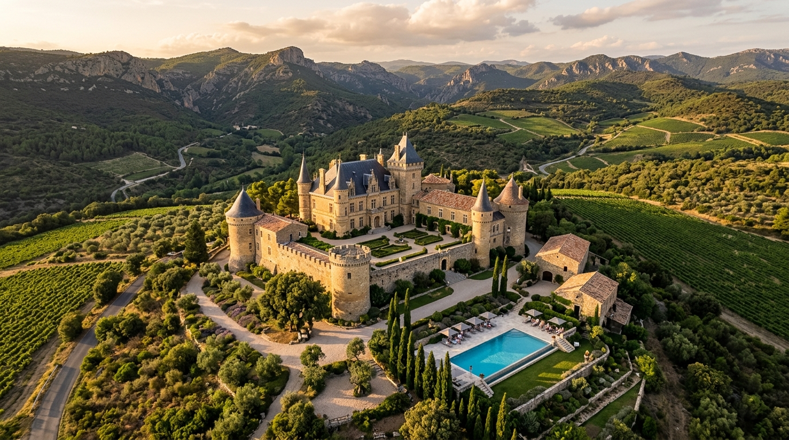

Ett strukturerat beslutsunderlag för det potentiella förvärvet av Château Corbières i Occitanie, Frankrike. Framtaget av de autonoma agentsystemen för beslutsunderlaget.
Kärnan i investeringscaset för Château Corbières.
Vår fastighetsskanning och finansiella modellering indikerar att Château Corbières utgör en exceptionell investeringsmöjlighet. Fastigheten är kraftigt undervärderad sett till det massiva markinnehavet om 307 hektar och den totala boarean på 2 155 m².
Investeringsstrategin bygger på att omvandla godset till ett exklusivt boutiquehotell med tillhörande bröllops- och konferensverksamhet, samt att maximera avkastningen från vinodlingarna genom att återplantera 30 hektar mark till full AOP Corbières-Boutenac-status.
Det autonoma systemet rekommenderar ett omedelbart förvärv. Fastighetens substansvärde i form av mark och historiska byggnader ger en stabil nedsides-säkring. Det låga kvadratmeterpriset (€1 390/m² för färdigställd yta) skapar en betydande värdemarginal, även efter att en nödvändig CapEx-investering på €1,2M genomförts för energianpassningar och vinodlingsexpansion.
Klicka dig vidare för att granska de tekniska, finansiella och juridiska rapporterna.
En djupgående analys av slottets konstruktion, Bastiden, K-märkta medeltidsbyggnader, pooler samt en fullständig redovisning av energideklarationer (EPC) och uppvärmning.
Jämförande marknadsanalys mot fem nyligen listade egendomar i Occitanie och Hérault, samt en detaljerad genomgång av uppgraderingsrisker och driftskostnads-CapEx.
Projektplan och fasindelning för CapEx-investeringarna. Omfattar VVS/värmekonvertering, renovering av K-märkta lador, återplantering av 30 ha vinmarker samt utredningen om en solcellspark på 1–10+ MW.
Modeller för verksamheterna: Hotellrörelse med 20+ rum, privatuthyrning av Bastiden, kommersiella event samt kassaflöden från AOP vintillverkning.
Rapporter om bolagsupplägg (SCI/SAS), hantering av den franska jordbruksmyndigheten SAFER, samt en 5-årig kassaflödeskalkyl och ROI-kalkyl.
Utredning av lokala, regionala och nationella lagar (Loi Sempastous, ERP-krav, ABF-kulturarvsregler) samt nätverksetablering i Narbonne.
Bakgrundsinformation om de tre autonoma agenterna (Juridik, Marknad, Drift) som sammanställt och kvalitetssäkrat detta underlag under Google Antigravity-miljön.
Alla uppdateringar av detta investeringsunderlag versionshanteras i realtid via Git och publiceras live till GitHub Pages via automatiserade GitHub Actions.